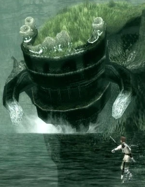

Pelagia es el duodécimo coloso. Se encuentra en un hermoso lago con una cascada que se precipita a través de unas grandes arcadas. No emergerá de debajo de las aguas a menos que se le moleste invadiendo su lago o encaramándose a las ruinas que sobresalen del agua

Pelagia en PS2/PS3